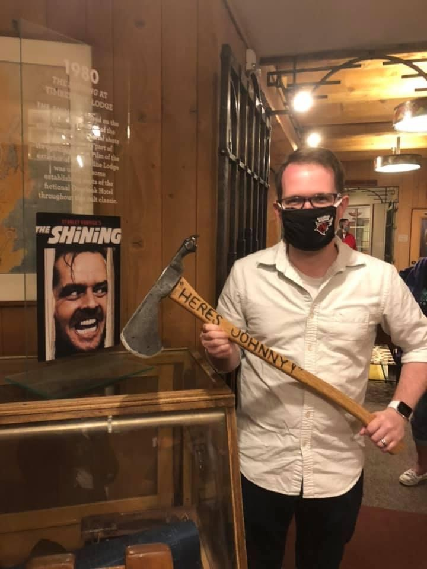

When I'm not doing schoolwork I enjoy spending time at my local Kung-Fu gym. I am currently an Orange sash about to test for Blue, but I enjoy the workout so the sash level is secondary. Another hobby of mine is hiking outdoors, as shown in this picture my wife and I took at Ramona Falls in Mount Hood National Forest when we were in Oregon. Unfortunately I do not get out hiking as much as I would like, especially because getting anywhere scenic from home requires a bit of travel.
I also enjoy playing video games. Some of my current favorites have been:
As a bonus, here is a picture from my recent vacation to the Timberline Lodge, which was used as the exterior of the Overlook Hotel in Stanley Kubrick's 1980 film adaptation of Stephen King's The Shining.
